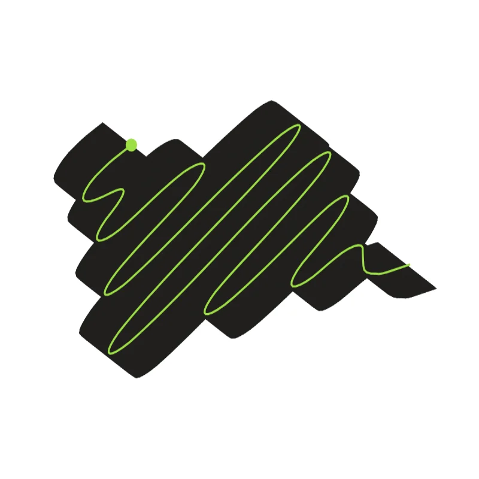
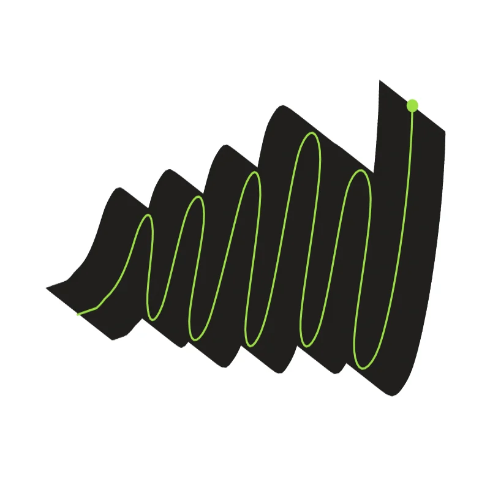
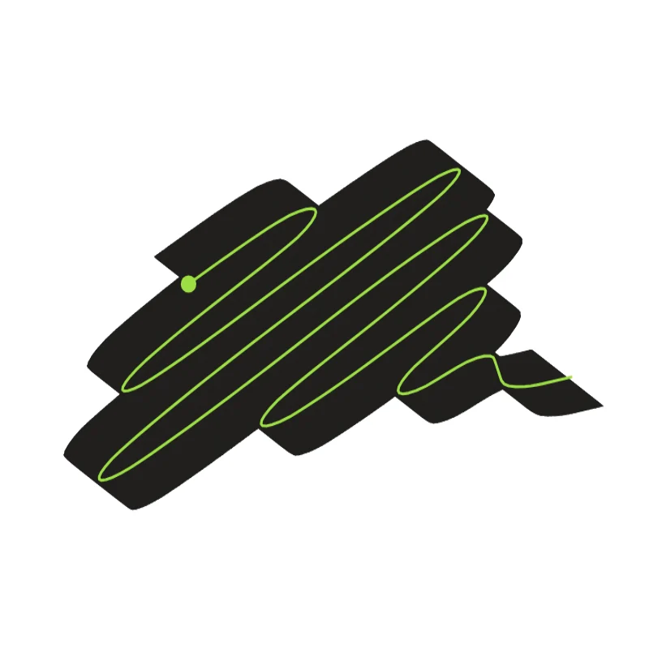
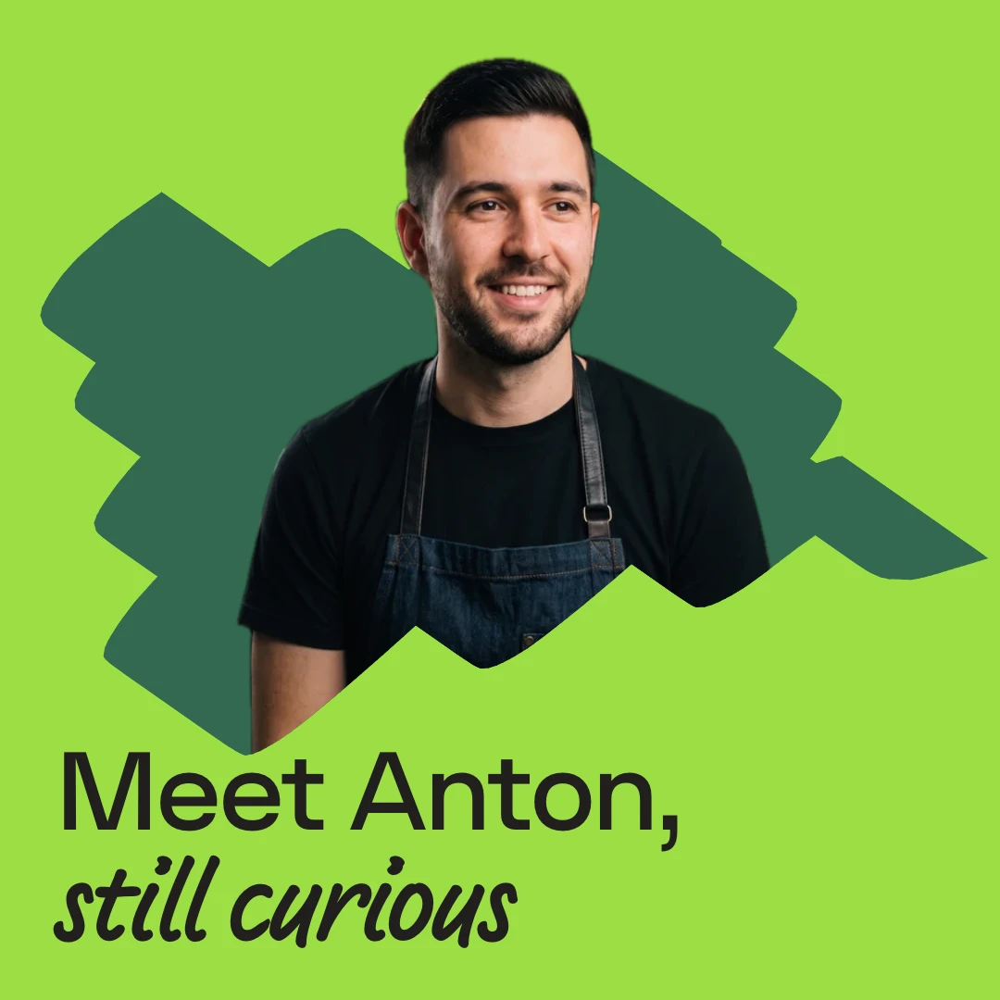
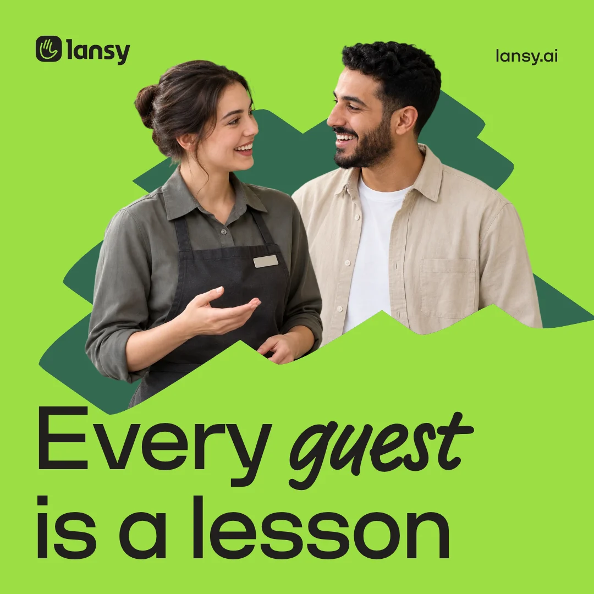
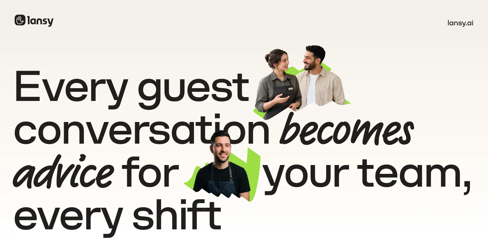

A scribble drawn with our pen. It holds the place where a conversation happens, and the people come out of it.
A blob is a path swept by a broad nib. The same path with the same pen always gives the same blob.



assets/line. Never a generic brush, never by hand, never by an image model.It takes A or B and varies it by a seed. The same seed always gives the same blob: to keep one, note its seed and save its path to assets/line.
The blob is the place where a conversation happens. The people in it are real cut-outs, and they always relate to the blob in one of two ways.


